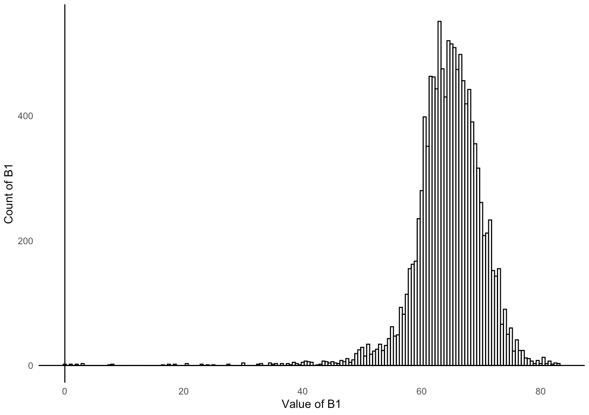

carbcontpred: Predicting and Mapping Soil Organic Carbon Content Based on The Spectral Reflectance of Soil Samples in Hudson Bay Lowlands, Ontario, Canada
This package contains objects that are sourced from a 2022 McMaster
Remote Sensing Laboratory research project and objects created to
facilitate the use and analysis of the fieldwork data. The project
recorded a wide range of biochemical, biophysical, and spectral metrics
of 432 soil samples that were collected from the Hudson Bay Lowlands (N
51.220318, W 80.556189) and measured and analyzed at McMaster University
and the University of Guelph. A portion of the project’s data has been
cleaned and packaged for easy use in an R environment.
The soil samples were collected from near the Kashechewan (N 52.253621, W 81.776621), Moose Factory (N 51.220318, W 80.556189), and Attawapiskat (N 52.934019, W 82.377133) First Nation communities in northern Ontario, Canada. The image below shows the 3 locations where the soil samples were collected from:
Figure 1. A satellite image map of the portion of the Hudson Bay Lowlands where the soil samples were collected from. The legend displays the locations of the soil sample sites.
The project was funded by the Natural Sciences and Engineering Research Council of Canada (NSERC) through the Discovery Grants program (RGPIN-2020-05,708). The corresponding author is Kangyu So1. The full list of authors can be found here2.
What Is This Package?
The package carbcontpred contains objects that are
sourced from a 2022 McMaster Remote Sensing Laboratory research project
and objects created to facilitate the use and analysis of the fieldwork
data. This package includes data on the spectral reflectance and organic
carbon content of soil samples after they have been dried in an oven for
48 hours. The package also includes the function cpred for
building a linear regression model to make organic carbon content
predictions, and an R Markdown file on pre-processing the
data for cpred. The package also includes the function
mappred for using the predictions from the linear
regression model to predict the organic carbon content of an Region of
Interest (ROI) spectral reflectance data table, and an R
Markdown file on pre-processing the data for mappred.
The raw data from the research project will eventually be freely
available to the public through a repository on GitHub, but it is bulky
and organized in a complicated manner. carbcontpred
pre-processes the data in R, extracting the portion of the
data that is useful for developing predictive models for carbon stock in
soil samples. The package also includes functions that can be used to
build predictive models or be tuned in the future by the authors or an
open-source community.
Set-Up
Installation
This is how you install the package if you have not done so yet:
install.packages("remotes", repos = "http://cran.us.r-project.org")
library(remotes)
remotes::install_github("KangyuSo/carbcontpred",
build_vignettes = TRUE)Begin by loading the package:
Pre-Processing Data for cpred
The 2022 McMaster Remote Sensing Laboratory research project collected soil samples from the Hudson Bay Lowlands region in northern Ontario, Canada (N 51.220318, W 80.556189). Included within are two csv files containing data for the soil samples. The first csv file contains data on the spectral reflectance of post-dried soil samples between the wavelengths 350 nm and 2500 nm in increments of 1 nm.
The reflectance spectra are not normalized, so continuum removal must be applied. Which is done using the following chunk:
ref_dry <- as.data.frame(apply(data_ref[,-1], MARGIN=2, FUN =continuumRemoval, wav = data_ref$Wavelength))
ref_dry <- cbind(Wavelength = data_ref$Wavelength, ref_dry)The table is still arranged so that its definitions are composed of the wavelength and the ID of all of the soil samples, totaling 433 definitions. This is too many data definitions right now and we are only interested in the average reflectance of a given wavelength range.
We will first calculate the average using the following chunk:
start_row <- 350
end_row <- 2500
ref_dry <- ref_dry[start_row:end_row, 2:ncol(ref_dry)]
avg_values <- colMeans(ref_dry, na.rm = TRUE)Next, we will create a new dataset that records the sample ID and average reflectance in a more acceptable format:
ref_dry_avg <- data.frame(
"Sample_ID" = colnames(ref_dry),
"Reflectance" = avg_values
)Now, we have a dataset with our sample ID and average reflectance,
the latter of which will be the independent variable for the linear
regression model. We need to add our dependent variable to this dataset,
which would be the organic carbon content. This data is stored in
SoilMetrics_v01.csv in the
\data-raw folder.
We will merge the organic carbon content data from this dataset to the dataset containing the sample ID and average reflectance using the following chunk:
ref_dry_avg <- ref_dry_avg %>%
left_join(data_met %>% select(Sample_ID, OC), by = "Sample_ID") %>%
rename(Organic_Carbon = OC)Finally, our data is fully processed and ready to build linear
regression models using the cpred function. Let’s take a
look at the first 6 rows of the data:
Table 1. The first 6 rows of the
ref_dry_avg data set.
| Sample_ID | Reflectance | Organic_Carbon |
|---|---|---|
| A1AD.001 | 0.8868612 | 45.40 |
| A1AD.002 | 0.8635153 | 45.70 |
| A1AD.003 | 0.8830594 | 38.50 |
| A1AD.004 | 0.9512481 | 9.83 |
| A1AD.005 | 0.9566361 | 10.00 |
| A1AD.006 | 0.9565598 | 9.62 |
See the process-ref_dry.Rmd file for complete details on
how the raw data was processed for use in the carbcontpred
package.
cpred Function Overview:
The cpred function builds a linear regression model
using spectral reflectance as the independent variable and organic
carbon content as the dependent variable and uses it to predict the
organic carbon content of soil samples based on their reflectance. The
function will utilize a dataset containing the spectral reflectance and
organic carbon content of soil samples. In this package, that dataset
will be ref_dry_avg.rda.
The cpred function can be applied using the following chunk:
data <- data.frame(ref_dry_avg)
pred_c <- cpred(data, "Reflectance", "Organic_Carbon", 0.7, 10, "Predicted_Organic_Carbon")For the chunk above, the parameter data represents the
ref_dry_avg dataset. The parameter
"Reflectance" represents the "Reflectance"
column of the ref_dry_avg dataset which is the average
reflectance between 300 nm and 2500 nm of the post-dried soil samples.
The parameter "Organic_Carbon" represents the
"Organic_Carbon" column of the ref_dry_avg
dataset which is the measured organic carbon content by percent dry
weight of the post-dried soil samples. The parameters 0.7
and 10 represent the test size for the model and the number
of folds for the cross-validation respectively. The parameter
"Predicted_Organic_Carbon" represents the name for the
predicted organic carbon content output.
The return of the function is a new column added to the previous dataset which contains the predicted organic carbon content values using a cross-validated linear regression model.
Let’s take a look at the 6 rows of this newly updated dataset
pred_c with the predicted organic carbon content
values:
Table 2. The first 6 rows of the
pred_c data set.
| Sample_ID | Reflectance | Organic_Carbon | Predicted_Organic_Carbon | |
|---|---|---|---|---|
| 1 | A1AD.001 | 0.8868612 | 45.400 | 44.248066 |
| 2 | A1AD.002 | 0.8635153 | 45.700 | 53.439298 |
| 3 | A1AD.003 | 0.8830594 | 38.500 | 45.744814 |
| 6 | A1AD.006 | 0.9565598 | 9.620 | 16.807794 |
| 8 | A1AD.008 | 0.9895953 | 0.440 | 3.801782 |
| 9 | A1AD.009 | 0.9891859 | 0.465 | 3.962973 |
Let’s visualize this data as a scatter plot where the original and predicted organic carbon content values will be our X and Y axis respectively:
install.packages("ggplot2")
library(ggplot2)
ggplot(pred_c, aes(x = Organic_Carbon, y = Predicted_Organic_Carbon)) +
geom_point() +
geom_smooth(method = "lm", color = "red") +
labs(x = "Organic_Carbon", y = "Predicted_Organic_Carbon") +
theme_minimal() +
theme(panel.grid = element_blank()) +
geom_hline(yintercept = 0, linetype = "solid", color = "black") +
geom_vline(xintercept = 0, linetype = "solid", color = "black")
Figure 2. A scatterplot of the
pred_c data set where the measured and predicted
organic carbon content by percent dry weight of the samples are the X
and Y axis respectively.
Finally let’s evaluate our output by calculating the R2 value between the the original and predicted organic carbon content values:
r_squared <- cor(pred_c$Organic_Carbon, pred_c$Predicted_Organic_Carbon)^2
cat("R-squared:", r_squared, "\n")The R2 value for this example is ~0.61, which is in line with the R2 values from studies that used standard global soil spectral data from peatlands to predict organic carbon (de Sousa Mendes et al., 2022).
See the README.Rmd files for additional details on how
to utilize cpred. See the cpred.R file for
additional information about the function.
Pre-Processing Data for mappred
The mappred function uses two data sets. The first data
set is a file containing spatial information and spectral reflectance
values of an ROI. The example file used in the vignette is
Reflectance_ROI.csv in the
\inst\extdata folder. For more information on how to
extract an ROI data file, see (INSERT WEBSITE LINK). The second data set
consists of the sample ID, average reflectance, and measured and
predicted organic carbon content of post-dried soil samples. This is
normally the output from the cpred function as shown in the
previous section. The example file used in the vignette is
pred_c.rda in the \data folder.
mappred Function Overview:
The mappred function extracts an algebraic equation
based on the reflectance and predicted organic carbon content of soil
samples in a data set. The function then applies min-max normalization
over the reflectance values of an ROI data set. Finally, the
mappred function uses the algebraic equation to predict the
organic carbon content of spatial points in the ROI data set based on
their reflectance, and then outputs the updated data set as a new csv
file. The function will utilize two data sets, one containing the
spatial information and spectral reflectance values of an ROI and one
containing the reflectance and predicted organic carbon content of soil
samples. In this package, the ROI data set will be
Reflectance_ROI.csv and the predicted organic carbon
content dataset will be pred_c.rda.
The mappred function can be applied using the following chunk:
mappred_c <- mappred(pred_c, "Reflectance", "Predicted_Organic_Carbon", system.file("extdata", "Reflectance_ROI.csv", package = "carbcontpred"), "ROI_Predicted_Carbon")For the chunk above, the parameter pred_c represents the
pred_c dataset. The parameter "Reflectance"
represents the "Reflectance" column of the
pred_c dataset which is the average reflectance between 300
nm and 2500 nm of the post-dried soil samples. The parameter
"Predicted_Organic_Carbon" represents the
"Predicted_Organic_Carbon" column of the
pred_c dataset which is the predicted organic carbon
content by percent dry weight of the post-dried soil samples. The
parameter
system.file("extdata", "Reflectance_ROI.csv", package = "carbcontpred")
represents the path to the Reflectance_ROI.csv file. The
parameter "ROI_Predicted_Carbon" represents the name for
output of the updated data set which will contain the predicted organic
carbon content of spatial points in the Reflectance_ROI.csv
file.
The return of the function is a csv file which contains the spatial
information of the ROI data set but replaces the reflectance values for
the points with the predicted organic carbon content. The original
reflectance values and the replacement predicted organic carbon content
are typically in the B1 of the ROI data set. It is not
recommended to run the mappred function again using this
new ROI data set in place of the original ROI data set containing the
reflectance values.
Let’s take a look at 6 rows of this newly created data file
ROI_Predicted_Carbon.csv with the predicted organic carbon
content values:
Table 3. The first 6 rows of the
ROI_Predicted_Carbon.csv data file.
| X..File.X | File.Y | Map.X | Map.Y | Lat | Lon | B1 |
|---|---|---|---|---|---|---|
| 91 | 1677 | -5517591 | 5894728 | 53.01250 | -82.47585 | 68.85428 |
| 92 | 1677 | -5517128 | 5894728 | 53.01250 | -82.46892 | 72.12532 |
| 90 | 1677 | -5518054 | 5894728 | 53.01250 | -82.48277 | 68.85428 |
| 89 | 1678 | -5518518 | 5894264 | 53.00833 | -82.48174 | 72.87362 |
| 90 | 1678 | -5518054 | 5894264 | 53.00833 | -82.47481 | 72.87362 |
| 91 | 1678 | -5517591 | 5894264 | 53.00833 | -82.46789 | 72.12532 |
Let’s visualize this data as a histogram where the value and count of
the B1 column in the ROI_Predicted_Carbon.csv
data set will be our X and Y axis respectively:
install.packages("ggplot2")
library(ggplot2)
ggplot(ROI_Predicted_Carbon, aes(x = B1)) +
labs(x = "Value of B1", y = "Count of B1") +
geom_histogram(binwidth= .5, colour= "black", fill= "white") +
theme_minimal() +
theme(panel.grid = element_blank()) +
geom_hline(yintercept = 0, linetype = "solid", color = "black") +
geom_vline(xintercept = 0, linetype = "solid", color = "black")
Figure 3. A histogram of the
ROI_Predicted_Carbon.csv data file where the spectral
reflectance value and the count of points with that value are the X and
Y axis respectively.
We can also visualize the ROI_Predicted_Carbon.csv data
set as a histogram with a kernel density curve where the value and
density of the B1 column in the
ROI_Predicted_Carbon.csv data set will be our X and Y axis
respectively:
ggplot(ROI_Predicted_Carbon, aes(x = B1)) +
geom_histogram(aes(y = ..density..),
binwidth = .5,
colour = "black", fill = "white") +
labs(x = "Value of B1", y = "Density of B1") +
theme_minimal() +
theme(panel.grid = element_blank()) +
geom_hline(yintercept = 0, linetype = "solid", color = "black") +
geom_vline(xintercept = 0, linetype = "solid", color = "black") +
geom_density(alpha = .2, fill = "#FF6666")
Figure 4. A histogram of the
ROI_Predicted_Carbon.csv data file where the spectral
reflectance value and the density of points with that value are the X
and Y axis respectively. A kernel density curve is overlaid on the
histogram in red.
To see how to use ROI_Predicted_Carbon.csv or another
output from mappred to visualize the predicted organic
carbon content of the ROI over a map, see (INSERT WEBSITE LINK).
See the README.Rmd files for additional details on how
to utilize mappred. See the mappred.R file for
additional information about the function.
Contributing to the carbcontpred Package
The purpose of this R package is to make the soil
spectral reflectance and organic carbon content data from a 2022
McMaster University Remote Sensing Laboratory project easily available
for predictive modeling and mapping in an R environment.
Currently, the package only uses the reflectance and organic carbon
content data of the post-dried soil samples, but we invite others from
the community to request additional metrics from the original project
dataset, report issues such as spelling errors, and contribute to the
carbcontpred package. To contribute to the package, create
a branch in the repository and submit a pull request for your
contribution. Contributions will be reviewed before approval and full
credit will be given.
References
de Sousa Mendes, W., Sommer, M., Koszinski, S., & Wehrhan, M. (2022). Peatlands spectral data influence in global spectral modelling of soil organic carbon and total nitrogen using visible-near-infrared spectroscopy. Journal of Environmental Management, 317, 115383. https://doi.org/10.1016/j.jenvman.2022.115383